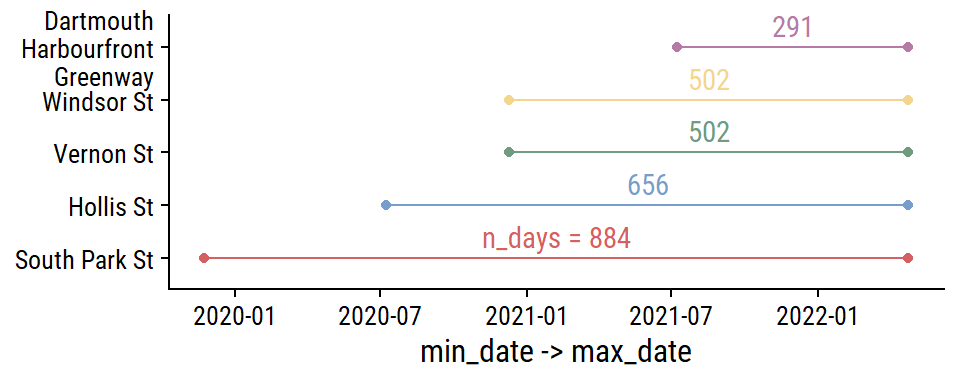
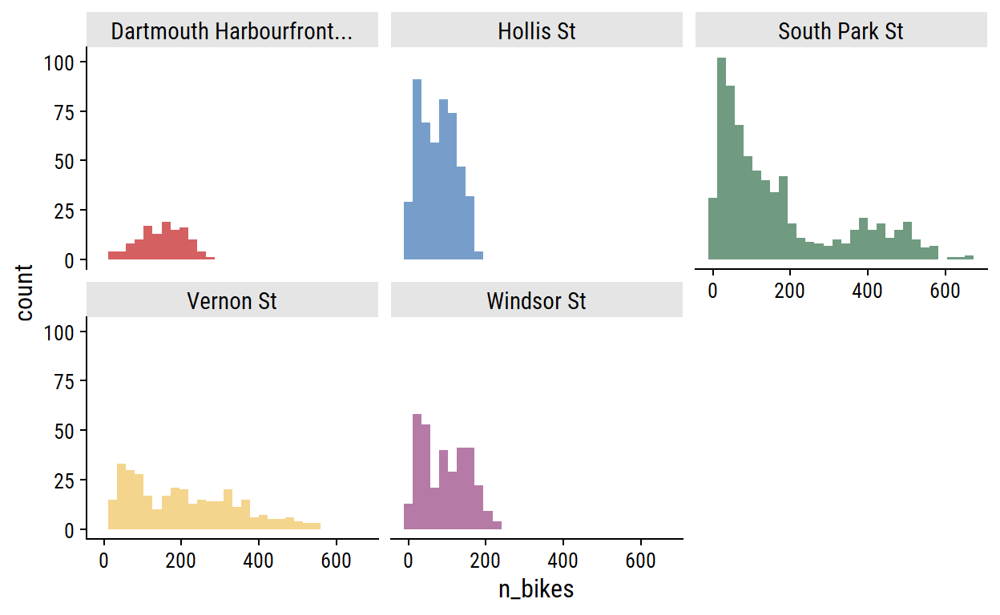
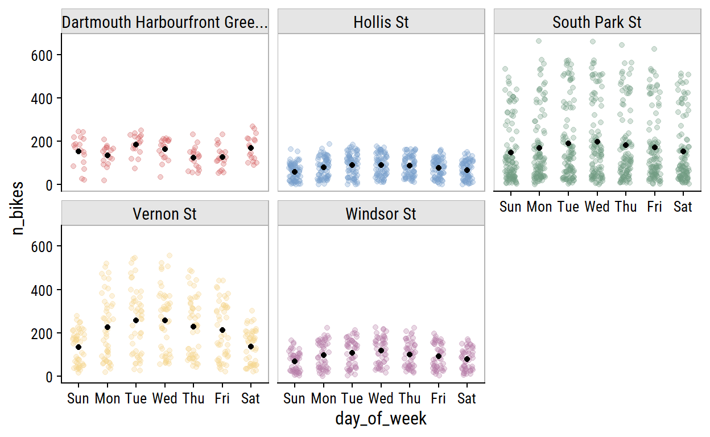
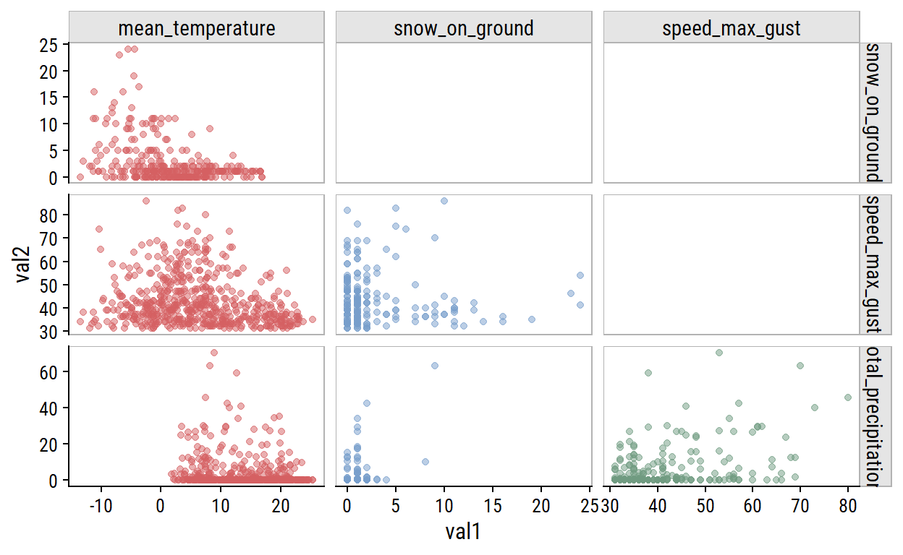

Setup
knitr::opts_chunk$set(echo = TRUE)
library(tidyverse)
library(gt)
library(patchwork)
library(tidymodels)
library(dunnr)
extrafont::loadfonts(device = "win", quiet = TRUE)
theme_set(theme_td())
set_geom_fonts()
set_palette()
Introduction
Import the data from part 1:
bike_ridership <- read_rds(
"../2022-04-27-predicting-bike-ridership-getting-the-data/bike-ridership-data.rds"
)
Exploratory data analysis
glimpse(bike_ridership)
Rows: 2,840
Columns: 9
$ site_name <chr> "Dartmouth Harbourfront Greenway", "Dart…
$ installation_date <date> 2021-07-08, 2021-07-08, 2021-07-08, 202…
$ count_date <date> 2021-07-08, 2021-07-09, 2021-07-10, 202…
$ n_records <int> 48, 48, 48, 48, 48, 48, 48, 48, 48, 48, …
$ n_bikes <int> 130, 54, 180, 245, 208, 250, 182, 106, 1…
$ mean_temperature <dbl> 18.2, 17.6, 21.0, 21.0, 20.6, 18.6, 17.7…
$ total_precipitation <dbl> 0.6, 10.0, 0.4, 0.0, 0.0, 0.0, 0.0, 11.6…
$ speed_max_gust <int> NA, 54, 56, NA, NA, NA, NA, 32, 37, NA, …
$ snow_on_ground <int> NA, NA, NA, NA, NA, NA, NA, NA, NA, NA, …The n_bikes variable here is the total number of bikes
counted at site_name over count_date. In the
original data, counts are recorded every hour which is reflected by the
n_records variable:
| site_name | n_records | n |
|---|---|---|
| Dartmouth Harbourfront Greenway | 8 | 1 |
| Dartmouth Harbourfront Greenway | 48 | 291 |
| Hollis St | 4 | 1 |
| Hollis St | 24 | 656 |
| South Park St | 8 | 1 |
| South Park St | 48 | 884 |
| Vernon St | 8 | 1 |
| Vernon St | 48 | 502 |
| Windsor St | 8 | 1 |
| Windsor St | 48 | 502 |
All except the Hollis St site have two channels (northbound and
southbound), which is why n_records = 48. The entries with
fewer n_records reflect the time of day that the data was
extracted:
| site_name | count_date | n_records |
|---|---|---|
| Dartmouth Harbourfront Greenway | 2022-04-25 | 8 |
| Hollis St | 2022-04-25 | 4 |
| South Park St | 2022-04-25 | 8 |
| Vernon St | 2022-04-25 | 8 |
| Windsor St | 2022-04-25 | 8 |
For this analysis, I will exclude this incomplete day:
The date ranges for each site:
bike_ridership %>%
group_by(site_name) %>%
summarise(
min_date = min(count_date), max_date = max(count_date),
n_days = n(), .groups = "drop"
) %>%
mutate(
site_name = fct_reorder(site_name, min_date),
n_days_label = ifelse(site_name == levels(site_name)[1],
str_c("n_days = ", n_days), n_days),
midpoint_date = min_date + n_days / 2
) %>%
ggplot(aes(y = site_name, color = site_name)) +
geom_linerange(aes(xmin = min_date, xmax = max_date)) +
geom_point(aes(x = min_date)) +
geom_point(aes(x = max_date)) +
geom_text(aes(label = n_days_label, x = midpoint_date), vjust = -0.5) +
scale_y_discrete(labels = ~ str_wrap(., width = 15)) +
labs(y = NULL, x = "min_date -> max_date") +
theme(legend.position = "none")

For each site, the distribution of daily n_bikes:
bike_ridership %>%
ggplot(aes(x = n_bikes, fill = site_name)) +
geom_histogram(bins = 30) +
facet_wrap(~ str_trunc(site_name, 15)) +
theme(legend.position = "none")

The South Park St site appears bimodal, which I noted in part 1 was likely due to the addition of protected bike lanes in 2021. This can be seen more clearly in the trend over time:
bike_ridership %>%
ggplot(aes(x = count_date, y = n_bikes, color = site_name)) +
geom_line() +
facet_wrap(~ site_name, ncol = 1) +
theme(legend.position = "none")

As you would expect for data in the same city, bike counters between sites are very highly correlated, which I can visualize:
bike_ridership %>%
transmute(count_date, n_bikes1 = n_bikes,
site_name1 = factor(str_trunc(site_name, 10))) %>%
left_join(., rename(., n_bikes2 = n_bikes1, site_name2 = site_name1),
by = "count_date") %>%
filter(as.numeric(site_name1) < as.numeric(site_name2)) %>%
ggplot(aes(x = n_bikes1, y = n_bikes2)) +
geom_point(aes(color = site_name1), alpha = 0.3) +
facet_grid(site_name2 ~ site_name1) +
theme(legend.position = "none") +
dunnr::add_facet_borders()

The weather variables have varying levels of completeness:
# Separate out the weather data
weather_data <- bike_ridership %>%
distinct(count_date, mean_temperature, total_precipitation,
speed_max_gust, snow_on_ground)
weather_data %>%
mutate(across(where(is.numeric), is.na)) %>%
pivot_longer(cols = -count_date) %>%
ggplot(aes(x = count_date, y = name)) +
geom_tile(aes(fill = value)) +
labs(y = NULL, x = NULL, fill = "Missing") +
scale_fill_manual(values = c(td_colors$nice$indigo_blue, "gray80")) +
scale_x_date(expand = c(0, 0)) +
scale_y_discrete(expand = c(0, 0)) +
theme(legend.position = "top")

The distributions:
weather_data %>%
pivot_longer(cols = -count_date) %>%
filter(!is.na(value)) %>%
ggplot(aes(x = value, fill = name)) +
geom_histogram(bins = 30) +
facet_wrap(~ name, nrow = 1) +
theme(legend.position = "none")

For non-missing cases, plot the pairwise relationships:
weather_data %>%
pivot_longer(cols = -count_date, names_to = "var1", values_to = "val1") %>%
mutate(var1 = factor(var1)) %>%
left_join(., rename(., var2 = var1, val2 = val1),
by = "count_date") %>%
filter(!is.na(val1), !is.na(val2),
# Use numeric factor labels to remove duplicates
as.numeric(var1) < as.numeric(var2)) %>%
ggplot(aes(x = val1, y = val2, color = var1)) +
geom_point(alpha = 0.5) +
facet_grid(var2 ~ var1, scales = "free") +
theme(legend.position = "none") +
dunnr::add_facet_borders()

Unsurprisingly, the clearest relationship in these data is decreasing
snow_on_ground with increasing
mean_temperature (top left plot).
Visualize relationships with n_bikes:
bike_ridership %>%
pivot_longer(
cols = c(mean_temperature, total_precipitation,
speed_max_gust, snow_on_ground),
names_to = "var", values_to = "val"
) %>%
filter(!is.na(val)) %>%
ggplot(aes(x = val, y = n_bikes)) +
geom_point(aes(color = str_trunc(site_name, 15)), alpha = 0.4) +
facet_wrap(~ var, nrow = 2, scales = "free_x") +
dunnr::add_facet_borders() +
labs(x = NULL, color = NULL) +
theme(legend.position = "bottom")

All of the weather variables seem to be associated with
n_bikes. In terms of predictive value,
mean_temperature looks like it might be the most useful,
and speed_max_gust the least.
Feature engineering
Add some more time variables for working with the
weather_data:
Temperature
The mean_temperature variable is missing 3% of
values.
Visualize the trend over time:
p1 <- weather_data %>%
filter(!is.na(mean_temperature)) %>%
ggplot(aes(x = count_date, y = mean_temperature)) +
geom_line(aes(color = factor(count_year))) +
scale_color_viridis_d("year") +
scale_x_date("date", date_breaks = "1 year")
p2 <- weather_data %>%
filter(!is.na(mean_temperature)) %>%
ggplot(aes(x = count_yday, y = mean_temperature)) +
geom_line(aes(color = factor(count_year))) +
scale_color_viridis_d("year") +
scale_x_continuous("day of year", breaks = c(0, 90, 180, 270, 365)) +
labs(y = NULL)
p1 + p2 +
plot_layout(guides = "collect")

I want to impute these missing values. The cyclic nature makes it a
good candidate for smoothing splines. As a starting point, try a natural
cubic spline with 5 knots on the count_yday variable:
library(splines)
lm_temperature <-
lm(mean_temperature ~ ns(count_yday, knots = 5),
data = filter(weather_data, !is.na(mean_temperature)))
p1 +
geom_line(
data = augment(lm_temperature, newdata = weather_data),
aes(y = .fitted)
)

We can obviously do a lot better. I’ll fit the data using a
generalized additive model (GAM) with the mgcv package. 1 For the count_yday
variable (ranges from 1-365), I’ll make sure that there is no
discontinuity between year by using a cyclic cubic spline
(bs = "cc"). I’ll also include a smoothing term of
count_day which will capture the trend across years.
The left plot shows the seasonal trend across the year (note the
lines would connect at count_yday = 1 and 365), and the
right plot shows the increase in average temperature throughout time
after accounting for the seasonal effect.
It doesn’t capture some of the coldest temperatures, but I’m pretty happy with that. I’ll use predictions from the GAM model to impute missing days:
Precipitation and snow
The total_precipitation variable is missing 46% of
values; 65% for snow_on_ground.
The total_precipitation distribution:
p1 <- weather_data %>%
mutate(total_precipitation = replace_na(total_precipitation, -5)) %>%
ggplot(aes(x = count_date, y = total_precipitation)) +
geom_point(alpha = 0.5) +
scale_y_continuous(breaks = c(-5, 0, 20, 40),
labels = c("missing", 0, 20, 40))
p1

This pattern of missing data during winter months makes me think that
the total_precipitation is actually total rainfall,
i.e. snowfall is not counted. I’m going to bake that assumption into the
model by renaming the variable and imputing missing values with 0:
weather_data <- weather_data %>%
rename(total_rainfall = total_precipitation) %>%
mutate(total_rainfall = replace_na(total_rainfall, 0))
This imputation is not a great approximation of the truth – there are
missing values in the past month that I know first-hand had
total_rainfall > 0 – but
The snow_on_ground distribution:
p2 <- weather_data %>%
mutate(snow_on_ground = replace_na(snow_on_ground, -2)) %>%
ggplot(aes(x = count_date, y = snow_on_ground)) +
geom_point(alpha = 0.5) +
scale_y_continuous(breaks = c(-2, 0, 10, 20),
labels = c("missing", 0, 10, 20))
p2

I’ll take the same zero imputation approach here, which I’m a lot more confident doing here because most of the missing values occur during non-winter months.
weather_data <- weather_data %>%
mutate(snow_on_ground = replace_na(snow_on_ground, 0))
A more careful approach might involve imputing 0 during non-winter months that I’m certain would have no snow on the ground, and modeling the winter months with something like a zero-inflated Poisson model.
d <- weather_data %>%
select(count_date, total_rainfall, snow_on_ground,
count_year, count_yday, count_day)
d %>%
count(snow_on_ground, sort = T)
# A tibble: 20 × 2
snow_on_ground n
<int> <int>
1 0 668
2 1 96
3 2 38
4 5 15
5 3 13
6 11 11
7 10 8
8 4 7
9 9 6
10 7 5
11 8 3
12 6 2
13 12 2
14 13 2
15 16 2
16 24 2
17 14 1
18 17 1
19 19 1
20 23 1# A tibble: 93 × 2
total_rainfall n
<dbl> <int>
1 0 655
2 0.2 41
3 0.4 14
4 1.4 10
5 1.6 8
6 0.6 7
7 3.6 7
8 1 5
9 0.8 4
10 3.8 4
# … with 83 more rowsReproducibility
Session info
setting value
version R version 4.2.0 (2022-04-22 ucrt)
os Windows 10 x64 (build 19044)
system x86_64, mingw32
ui RTerm
language (EN)
collate English_Canada.utf8
ctype English_Canada.utf8
tz America/Curacao
date 2022-04-30
pandoc 2.17.1.1 @ C:/Program Files/RStudio/bin/quarto/bin/ (via rmarkdown)Git repository
Local: bike-ridership C:/Users/tdunn/Documents/tdunn
Remote: bike-ridership @ origin (https://github.com/taylordunn/tdunn)
Head: [0792fd8] 2022-04-30: Started feature engineeringCheck out this blog post by Gavin Simpson for a great walkthrough modeling seasonal data with GAMs.↩︎